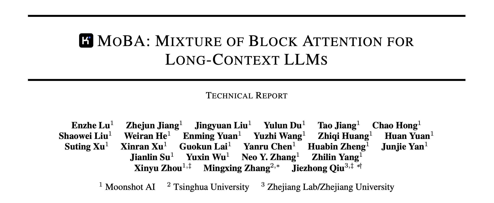
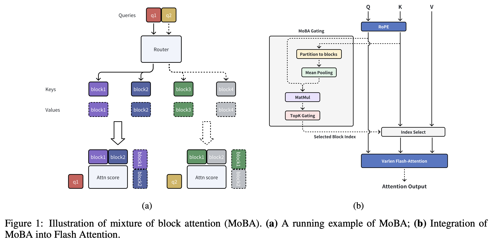

阅读月之暗面Kimi团队在LLM Foundations领域的新作。只写方法论解析。

Overview
3W1H: What challenge? Why this? What intuition? How to do?
- What challenge: flaws of traditional attention mechanism in long-context inference.
- Why this: draw inspirations from Mixure of Experts (MOE)
- Intution: language context consists of a series of ‘blocks’. The model could and should focus on a only subset of the blocks when making inference given a very long context.
- How to do: autonomous gated selection of blocks of attention parameters.
Methodology

Traditional attention mechanism: given a single query token
to the key and value tokens, : MoBA attention mechanism: divide
and into unions of ‘blocks’, then select only a subset of blocks for computation:
here
Details of block partitioning
Let
Then MoBA applies top-
Here
Details of gating mechanism
To obtain
Here
Then we get
Summarization
Overall, I suppose MoBA is intrinsically a hierarchical computatation method for simplifying unnecessary computation in long-context attention calculation. Let’s make a comparison:
- Traditional: query token
key tokens (A tree with depth 2) - MoBA: query token
key blocks key tokens (a tree with depth 3)
During this process, the pooling in a key block essentially condenses information of key tokens, thus simplifies the repeat computation on relatively useless tokens.
参考文献
- Enzhe Lu, Zhejun Jiang, Jingyuan Liu, Yulun Du, Tao Jiang, Chao Hong, Shaowei Liu, Weiran He, Enming Yuan, Yuzhi Wang, Zhiqi Huang, Huan Yuan, Suting Xu, Xinran Xu, Guokun Lai, Yanru Chen, Huabin Zheng, Junjie Yan, Jianlin Su, Yuxin Wu, Neo Y. Zhang, Zhilin Yang,Xinyu Zhou, Mingxing Zhang, Jiezhong Qiu. MoBA: Mixture of Block Attention for Long-Context LLMs. In Arxiv, 2025. https://arxiv.org/pdf/2502.13189